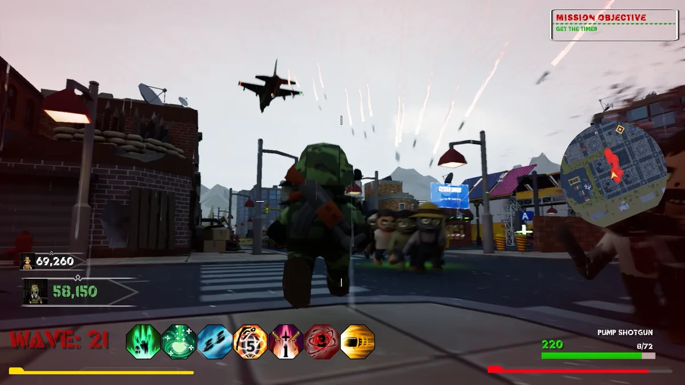
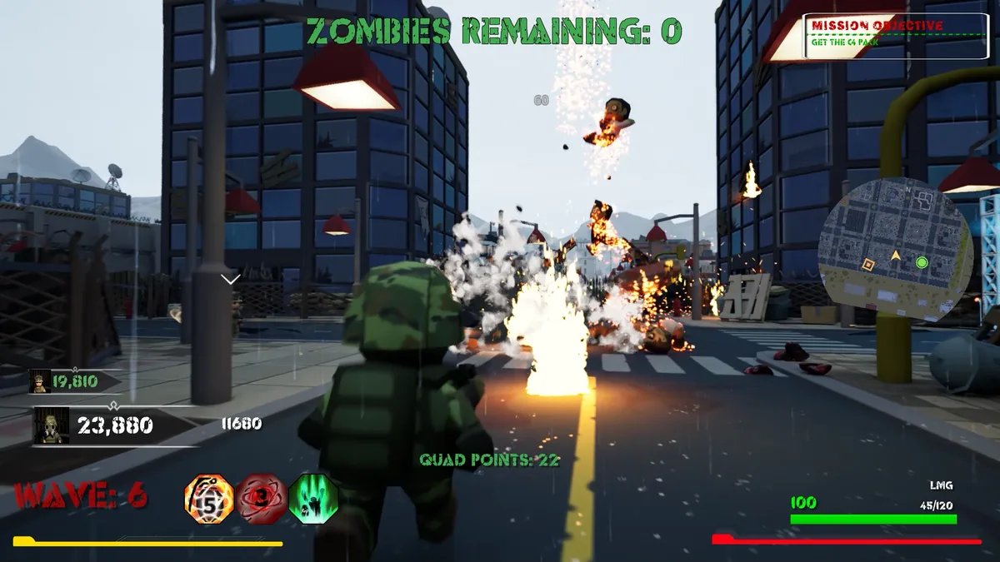

Arcade momentum
Weapons, perks, traps, and dismemberment mechanics keep encounters direct and energetic.

World War ToonZ brings together gameplay systems, stylised environments, characters, content, and release work in one studio-owned production.
Weapons, perks, traps, and dismemberment mechanics keep encounters direct and energetic.
Players fight through waves of undead while pushing toward the extraction point.
A cartoon treatment gives the action a recognisable look and room for playful contrast.
The project spans design, environments, character systems, content, multiplayer, and release.
Real gameplay captures from the studio archive. Explore the scenes here before opening the Steam listing.

